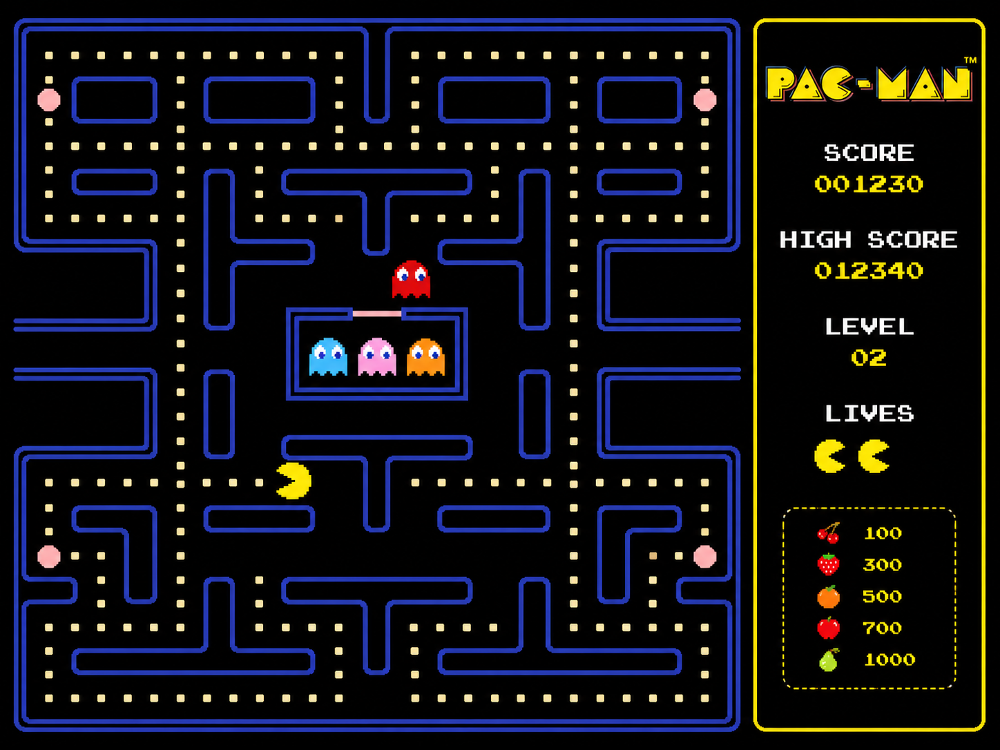
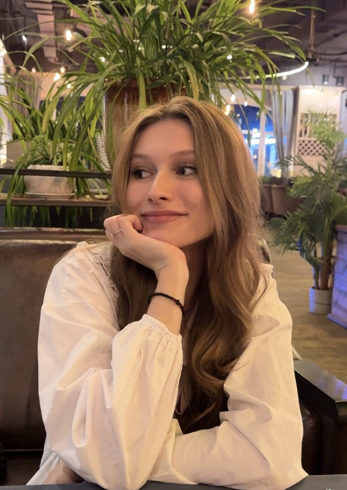
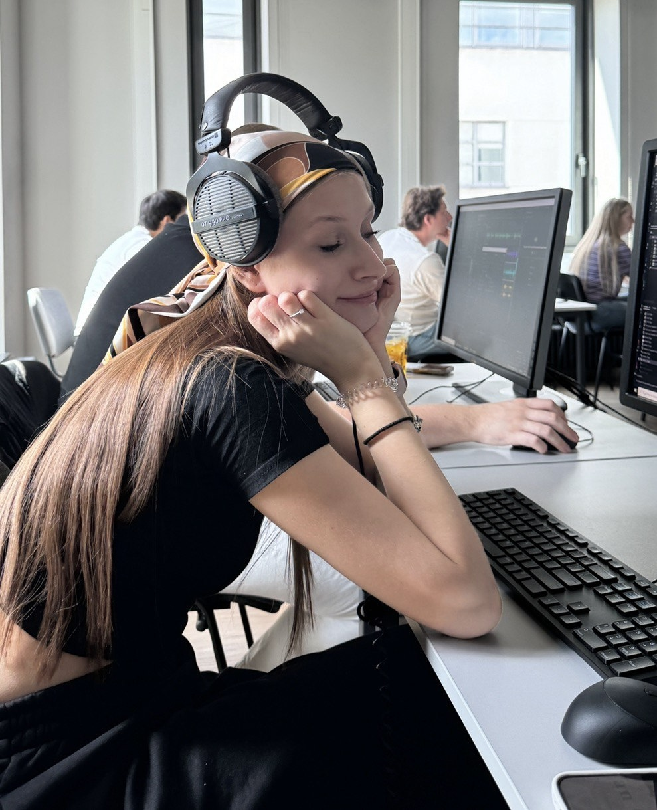
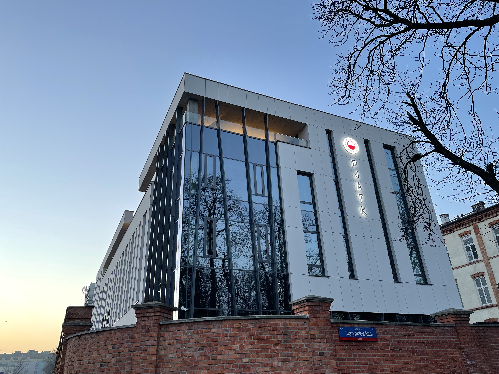
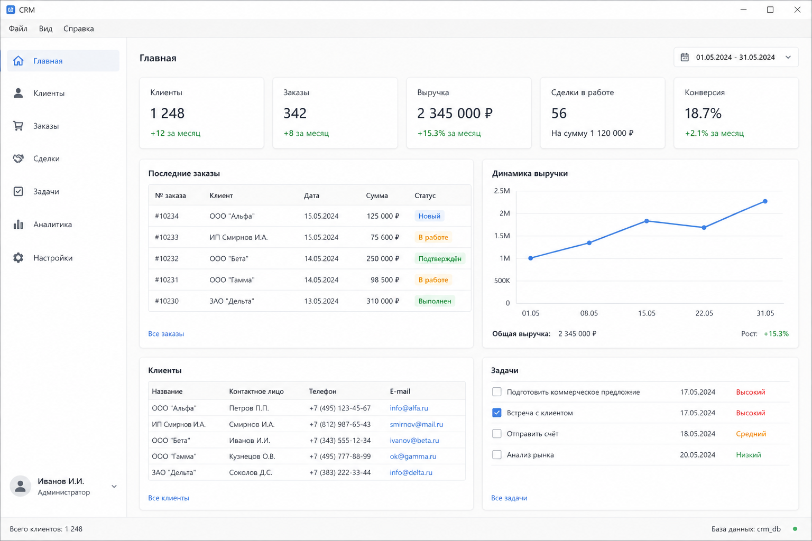
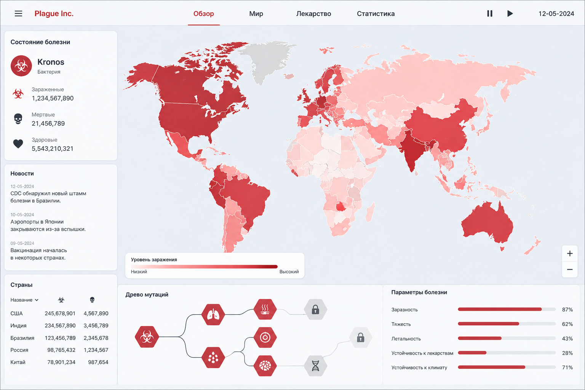
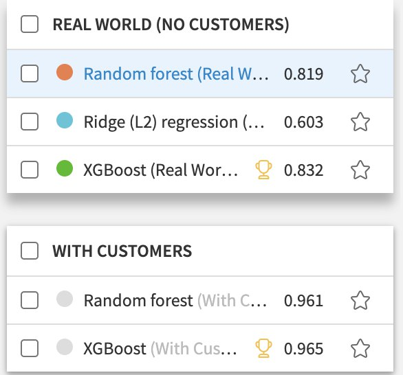
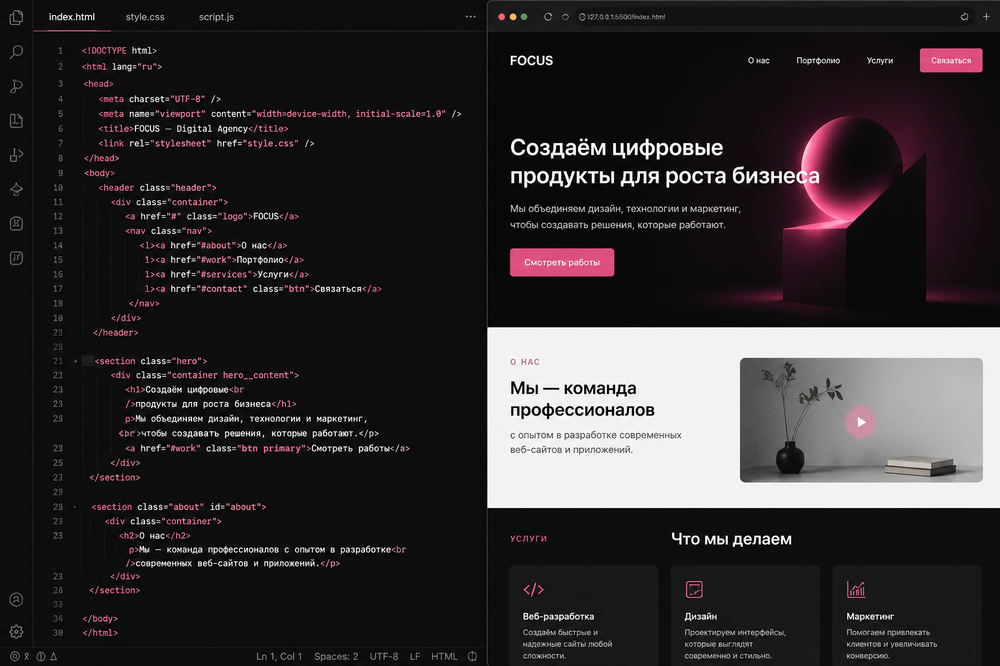
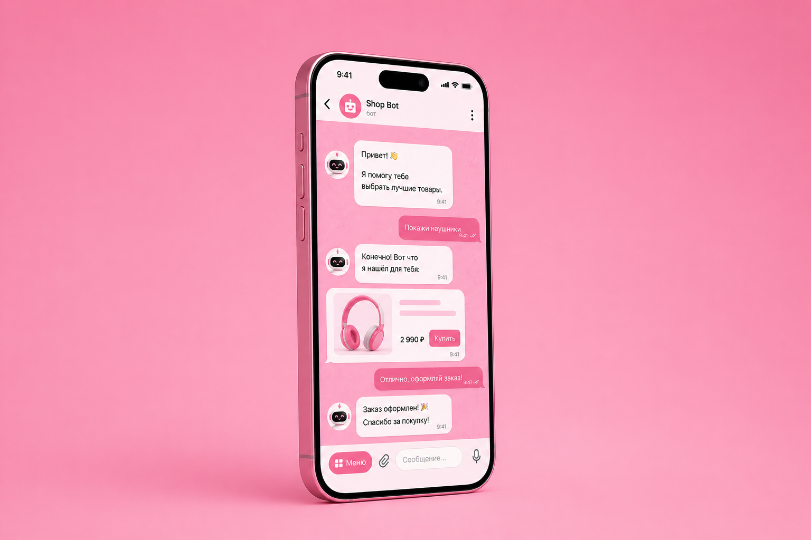

Java GUI · OOP
Игра PacMan
Классическая аркада на Java GUI. Собственный игровой цикл, AI призраков, система очков и уровней.
Junior Software Engineer
Создаю умных Telegram-ботов и frontend-сайты: от понятного интерфейса до автоматизации бизнес-процессов. В университете активно изучаю и тренирую backend.

A / 01 — Обо мне
Учусь на факультете Computer Science в Polish-Japanese Academy of Information Technology в Варшаве, Польша. Очно-заочная программа, выпуск — 2027.
В университете получаю фундаментальную техническую базу, которую активно применяю в своих проектах. Мой академический бэкграунд - это реальные навыки, отработанные на практике.
Мой основной фокус - умные Telegram-боты и frontend-сайты. При этом университетские проекты помогают мне уверенно тренировать backend-мышление. Базы данных, бизнес-логику, архитектуру и безопасную работу с данными. Так что планирую стать fullstack-developer, и вести свои сайты от начала до самого конца!

Мой основной фокус — умные Telegram-боты и frontend-сайты. При этом университетские проекты помогают мне уверенно тренировать backend-мышление: базы данных, бизнес-логику, архитектуру и безопасную работу с данными. Так что планирую стать fullstack-developer, и вести свои сайты от начала до самого конца!

Институт
Бакалавриат на факультете Computer Science, Варшава. Очно-заочная программа на английском, выпуск — 2027.
3й
Курс
EN
Язык программы
PL
Локация
Академические дисциплины
Подход
Теория сразу превращается в код.
Каждый изученный предмет — это новая возможность собрать pet-проект.

Классическая аркада на Java GUI. Собственный игровой цикл, AI призраков, система очков и уровней.

Полноценная программа для управления бизнесом на Java GUI. Учёт клиентов, заказов, аналитика.

Симулятор глобальной эпидемии. Реализовала древо мутаций вируса, систему заражения стран в зависимости от климата и сложную логику развития патогена.

Академический проект: стратегия расширения ритейла и предсказание продаж. Очистка данных, feature engineering, обучение моделей XGBoost и Random Forest.
Решаю CTF-таски, разбираюсь с уязвимостями (SQL Injection, XXE, broken auth) и пишу безопасный код. Работаю с Nmap, Hashcat, John the Ripper.
B / 02 — Главный фокус
В университете и в жизни я изучаю много всего. Я люблю копаться в новых технологиях и пробовать разное, но если говорить о том, чем я горю прямо сейчас и где лежит мой основной опыт — это две конкретные области:
01 — Разработка
Собираю интерфейсы, которыми приятно пользоваться. Слежу за тем, чтобы верстка не разваливалась на телефонах, кнопки работали предсказуемо, а код был чистым и аккуратным. Люблю браться за разные проекты, даже если на начальном этапе не знаю, как это осуществить :)


02 — Автоматизация
Превращаю скучную рутину в удобные меню внутри мессенджера. Пишу ботов, которые берут на себя запись клиентов, учёт заявок или просто делают жизнь проще. Стараюсь продумывать сценарии так, чтобы бот не падал от случайной опечатки пользователя.
C / 03 — Портфолио · SECTION C
Мой проектный опыт строится вокруг Telegram-ботов, сайтов, приложений и программ. Я люблю делать вещи, которые решают реальные проблемы - жизни, бизнеса — автоматизируют рутину, экономят время и просто удобно работают.
Свой «Джарвис»: бэкенд-сервис на Python в связке с экосистемой Apple. Выключаю режим «Сон» — iPhone дёргает сервер, тот собирает погоду, мои планы и новости, отдаёт нейросети, и телефон сам зачитывает мне готовый дайджест дня, пока я просыпаюсь.
Тот самый проект, который вы сейчас видите. Спроектировала и написала с нуля: от кастомных слайдеров до живой анимации SVG-линий.
Интерактивный сайт-квест, работающий в связке с Telegram. Игроки проходят задания, а бот фиксирует прогресс.
Максимально удобный бот для заказа в один клик. Собрала каталог, корзину и фичу «повторить прошлый заказ».
Внутренняя система управления. Разграничила роли (менеджер, склад, логист) для контроля заявок и отчетности.
Там лежат исходники, черновики и пет-проекты. Пишу понятный код и не прячу свои эксперименты.
D / 04 — In progress
Не люблю стоять на месте. Прямо сейчас в фокусе — углубление в базу и пара классных проектов, которые хочу довести до ума.
HTML/CSS, фреймворки, UX-практики.
ES6+, асинхронность, паттерны, API.
Клиенты, аналитика — бизнес-инструмент.
UX, монетизация, продвижение через TikTok.
E / 05 — Почему я
Читаю доку в оригинале, спокойно пишу код на английском и общаюсь
Надо разобраться в незнакомой библиотеке? Иду и читаю
Стараюсь понять ЗАЧЕМ мы пишем этот код, а не просто копипащу
Всегда думаю о том, удобно ли будет пользователю нажимать эти кнопки
Прокликиваю всё вдоль и поперёк, чтобы ловить баги до релиза
Довожу до результата, если что-то идёт не так — прихожу с вопросами и вариантами решений
Адекватность. Готова слушать фидбек, воспринимаю критику
Горящие глаза и желание писать хороший код, приносящий пользу
Мне нравится делать продукты, за которые не стыдно. Я искренне вовлекаюсь в процесс, ценю честную обратную связь и хочу расти в команде, где важен результат, а не просто закрытые таски.